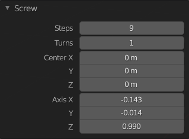
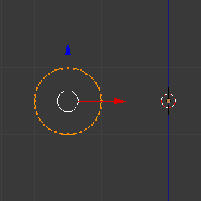
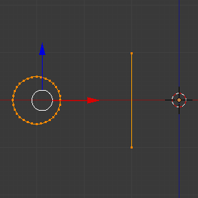
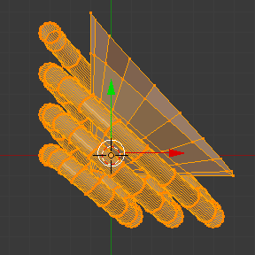
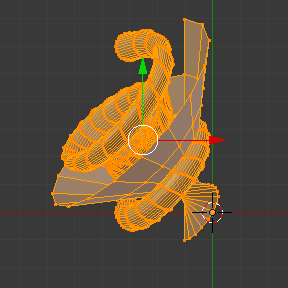

Screw¶
Tham khảo
- Mode:
Edit Mode
- Menu:
Operator Screw extrude geometry dọc theo một đường xoắn ốc (helix). Bạn có thể dùng nó để tạo ốc vít, lò xo, vỏ ốc biển v.v.
Mặc dù tương tự Screw Modifier, có một số khác biệt quan trọng:
Screw operator |
Screw modifier |
|---|---|
Hoạt động trong không gian world. |
Hoạt động trong không gian object. |
Chỉ extrude geometry được chọn. |
Extrude toàn bộ geometry. |
Điểm tâm có thể được chỉ định thủ công. |
Điểm tâm luôn là object origin. |
Một vòng luôn là 360°. |
Góc có thể được chọn tự do. |
Khoảng dịch chiều cao của mỗi vòng được tính tự động dựa trên geometry. |
Khoảng dịch chiều cao phải được chỉ định thủ công. |
Mỗi vòng còn có thể có khoảng dịch theo hướng kính ra xa/tiến về trục trung tâm (cũng do geometry quyết định). |
Bán kính giữ nguyên. |
Như đã mô tả ở trên, operator Screw tự động xác định khoảng dịch chiều cao và khoảng dịch hướng kính áp dụng sau mỗi vòng. Nó làm điều này bằng cách tìm các điểm cuối của một profile hở -- một chuỗi edge nối với nhau nhưng không tạo thành vòng khép kín. Geometry được extrude sao cho vertex trên cùng của profile ở vòng này trùng với vertex dưới cùng ở vòng kế tiếp.
Trường hợp sử dụng phổ biến nhất là extrude một profile hở như vậy. Tuy nhiên bạn không bị giới hạn ở điều này. Chỉ cần có một profile hở trong vùng chọn -- dù chỉ là một edge rời rạc -- bạn vẫn có thể extrude các profile khép kín và thậm chí cả geometry có face.
Bạn có thể xem một số ví dụ dưới đây.
Cách dùng¶
Đầu tiên, hãy đảm bảo mesh của bạn có một profile hở. Nếu bạn muốn extrude thêm thứ khác (như một hay nhiều đường tròn), bạn nên tạo một profile hở ngay bên cạnh nó.
Sau khi xong việc, vào Edit Mode và chọn geometry muốn extrude, đảm bảo chọn đúng một profile hở. Nếu ít hơn hoặc nhiều hơn, operator sẽ thất bại với thông báo lỗi "You have to select a string of connected vertices too."
Đảm bảo 3D Cursor nằm tại điểm tâm mà bạn muốn geometry xoay quanh. Cũng đảm bảo trục dọc trên màn hình của bạn khớp với hướng của trục mà geometry nên xoay quanh. Ví dụ phổ biến nhất là xoay quanh trục Z global: khi đó bạn đặt 3D Cursor tại gốc tọa độ world và chuyển sang chế độ nhìn bên dạng orthographic.
Giờ bạn đã sẵn sàng chạy operator: mở menu Edge (bằng cách nhấp vào nó trên header của 3D Viewport hoặc nhấn Ctrl-E) và nhấp Screw.
Bạn có thể đổi số bước và số vòng trong panel Adjust Last Operation.
Nếu bạn tạo profile hở chỉ để dẫn hướng cho phép extrude (chứ không phải vì cần geometry của nó), bạn có thể chọn các face đã extrude của nó bằng cách di chuột tới một face rồi nhấn L, sau đó xóa chúng bằng X hoặc Delete.
Tùy chọn¶

Panel Screw (trong Edit Mode).¶
- Steps
Số lần extrude thực hiện cho mỗi vòng 360°.
- Turns
Số vòng sẽ tạo.
- Center X, Y, Z
Tọa độ trong không gian world của điểm tâm mà geometry xoay quanh. Ban đầu đây là vị trí của 3D Cursor.
- Axis X, Y, Z
Vector hướng để xoay geometry quanh đó. Ban đầu đây là trục dọc trong không gian màn hình (tức trục Z global khi ở chế độ nhìn bên, hoặc trục Y global khi nhìn từ trên xuống). Bằng cách đảo dấu Axis, bạn có thể đổi giữa chiều kim đồng hồ và chiều ngược kim đồng hồ.
Mẹo
Bạn có thể dùng mục menu Align View to Active để căn viewport, và do đó cả Axis, theo một item nhất định trong scene.
Lưu ý rằng Axis chỉ quyết định geometry xoay "theo phương ngang" quanh điểm tâm như thế nào. Nó không quyết định geometry di chuyển "theo phương dọc" ra sao. Thay vào đó, geometry luôn di chuyển với khoảng cách và hướng cho bởi các điểm cuối của profile hở, và đi xuống theo không gian cục bộ của object.
Ví dụ¶
Tạo một lò xo¶
Đầu tiên, hãy tạo một đường tròn làm tiết diện của lò xo:
Mở Blender và xóa Cube mặc định.
Thêm một đường tròn bằng cách nhấn Shift-A và chọn .
Đặt thuộc tính Location X của object mới thành -3 và thuộc tính Rotation X của nó thành 90°.
Vào Edit Mode bằng cách nhấn Tab.
Chuyển sang chế độ nhìn Front Orthographic bằng cách nhấn Numpad1.

Profile extrude đã được tạo.¶
Tiếp theo, hãy tạo một đường thẳng đứng để chỉ định khoảng cách giữa các vòng lò xo:
Bỏ chọn tất cả vertex bằng cách nhấp vào khoảng trống hoặc nhấn Alt-A.
Nhấp Ctrl-RMB hai lần để tạo hai vertex nối với nhau bằng một edge.
Chọn cả hai vertex và nhấn S X 0 Return để đảm bảo chúng có cùng tọa độ X. (Điều này cần thiết để giữ bán kính lò xo không đổi.)

Profile dẫn hướng đã được tạo.¶
Giờ chúng ta đã sẵn sàng tạo lò xo:
Chọn cả đường tròn và đường thẳng bằng cách nhấn A.
Nhấp .
Chỉnh Steps và Turns theo ý bạn.
Thử đổi Axis Z thành -1 và xem điều này khiến lò xo xoay theo chiều ngược lại.
Bạn có thể có được một số kết quả thú vị bằng cách đặt Axis chéo (ví dụ giữ Axis Z ở -1 và đặt Axis X thành 1). Lưu ý rằng từng vòng lò xo riêng lẻ nghiêng 45°, nhưng sau mỗi vòng, chúng ta vẫn đi xuống theo phương dọc (theo hướng của đường dẫn hướng).
 |
 |
Tạo trục ốc vít¶
Operator Screw rất phù hợp để tạo các đường xoắn ốc không có khe hở giữa các vòng.
Mở Blender và vào Edit Mode của cube mặc định.
Xóa tất cả vertex bằng cách nhấn X hoặc Delete.
Chuyển sang chế độ nhìn Front Orthographic bằng cách nhấn Numpad1.
Nhấp Ctrl-RMB ba lần để tạo một profile giống như bên dưới.
Chọn hai vertex gần trục Z global nhất và nhấn S X 0 Return để đảm bảo chúng có cùng tọa độ X.
Chọn cả ba vertex và nhấp .
Chỉnh Steps và Turns theo ý bạn.
Bạn cũng có thể tạo những hình dạng thú vị hơn, như "cầu thang" xoắn ốc này:
Tạo mũi ốc vít¶
Cho đến giờ, chúng ta luôn đảm bảo vertex đầu và vertex cuối của profile có cùng tọa độ X, nhờ đó giữ bán kính đường xoắn ốc không đổi. Tuy nhiên, không gì ngăn cản bạn dùng các tọa độ X khác nhau để đường xoắn ốc thu nhỏ/mở rộng dọc theo chiều cao của nó.